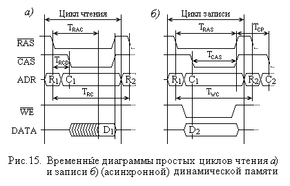
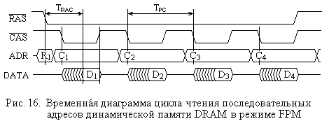
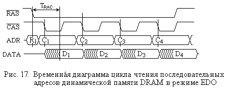

2.3. Динамические полупроводниковые ЗУ с произвольным доступом
2.3.1. Асинхронная динамическая память DRAMКак отмечалось выше, в качестве оперативных ЗУ в настоящее время чаще используются динамические ЗУ с произвольным доступом (DRAM). Такое положение обусловлено тем, что недостатки, связанные с необходимостью регенерации информации в таких ЗУ и относительно невысоким их быстродействием, с лихвой компенсируются другими показателями: малыми размерами элементов памяти и, следовательно, большим объемом микросхем этих ЗУ, а также низкой их стоимостью.
Широкое распространение ЗУ этого типа проявилось также и в разработке многих его разновидностей: асинхронной, синхронной, RAMBUS и других. Основные из них рассматриваются далее.
2.3.1. Асинхронная динамическая память DRAM
В процессе совершенствования технологии производства изменялась и логика функционирования динамических ОЗУ.
Первые такие ЗУ, которые впоследствии стали называть асинхронными динамическими ОЗУ, выполняли операции чтения и записи, получив лишь запускающий сигнал (обычно, сигнал строба адреса) независимо от каких-либо внешних синхронизирующих сигналов. Диаграмма простых (не пакетных) циклов чтения и записи для таких ЗУ представлена на рис. 15, а) и 15, б) соответственно. Любой цикл (чтения или записи) начинается по спаду (фронту “1” →“0”) сигнала RAS#.

Как видно из диаграмм, адрес на шины адреса поступает двумя частями: адрес строки (обозначенный как R1 или R2) и адрес столбца (C1 и C2). В момент, когда на адресной шине установилось требуемое значение части адреса, соответствующий сигнал строба (RAS# или CAS#) переводится в активное (нулевое) состояние.
В цикле чтения (сигнал WE# во время этого цикла удерживается в единичном состоянии) после подачи адреса строки и перевода сигнала CAS# в нулевое состояние начинается извлечение данных из адресованных элементов памяти, что показано на диаграмме сигнала DATA как заштрихованная часть. По истечении времени доступа TRAC (RAS Access Time – задержка появления данных на выходе DATA по отношению к моменту спада сигнала RAS#) на шине данных устанавливаются считанные из памяти данные. Теперь после удержания данных на шине в течение времени, достаточного для их фиксации, сигналы RAS# и CAS# переводятся в единичное состояние, что указывает на окончание цикла обращения к памяти.
Цикл записи начинается так же, как и цикл чтения, по спаду сигнала RAS# после подачи адреса строки. Записываемые данные выставляются на шину данных одновременно с подачей адреса столбца, а сигнал разрешения записи WE# при этом переводится в нулевое состояние (известен и несколько иной цикл “задержанной” записи). По истечении времени, достаточного для записи данных в элементы памяти, сигналы данных, WE#, RAS# и CAS# снимаются, что говорит об окончании цикла записи.
Помимо названного параметра TRAC – времени доступа по отношению к сигналу RAS# (его значение для микросхем второй половины 90-х годов XX столетия составляло от 40 нс до 80 нс), - на диаграмме на рис.15 указаны еще несколько времен:
Значения времен TRC и TWC для памяти (90-х годов) составляли порядка 50 – 100 нс, так что на одно (полное) обращение уходило от 5 до 7 циклов системной шины в зависимости от ее частоты, особенностей используемого чипсета и, собственно, быстродействия памяти. Так, для системной шины с частотой 66 Мгц длительность цикла составляет порядка 15 нс, что для 5 – 7 циклов дает диапазон 75 – 100 нс, если же частота системной шины составляла 100 Мгц, то 5 циклов занимают 50 нс.
Подача адреса двумя частями удлиняет цикл обращения к памяти. Вместе с тем большинство обращений непосредственно к оперативной памяти производится по последовательным адресам.
Действительно, как отмечалось выше, до 90 и более процентов обращений процессора к памяти удовлетворяются кэш-памятью. Те обращения, которые не могут быть удовлетворены кэшем, вызывают обмен информацией между ОП и кэшем. При этом передачи выполняются блоками, по 32 байта (4 цикла по 8 байт, в процессорах Intel 486 это были строки по 16 байт – 4 цикла по 4 байта), расположенными в последовательных адресах и называемыми строками кэша (см. “Организация кэш памяти”). Обмен информацией между оперативной памятью и внешними устройствами обычно выполняется целыми блоками, что также предполагает обращения по последовательным адресам.
Поскольку адрес строки является старшей частью адреса, то для последовательных адресов памяти адрес строки одинаков (исключение составляет переход через границу строки). Это позволяет в (пакетном) цикле обращений по таким адресам задать адрес строки только для обращения по первому адресу, а для всех последующих задавать только адрес столбца. Такой способ получил название FPM (Fast Page Mode – быстрый страничный режим) и мог реализовываться обычными микросхемами памяти при поддержке контроллера памяти чипсета, обеспечивая сокращение времени обращения к памяти для всех циклов пакета, кроме первого. Получающаяся при этом временная диаграмма пакетного цикла чтения представлена на рис. 16.

Как видно из рисунка, цикл чтения первого слова пакета выполняется так же, как и одиночное обращение. Второй и последующие циклы чтения оказываются короче первого из-за отсутствия фазы подачи адреса строки, и их длительность определяется минимально допустимым периодом следования импульсов CAS# – TPC (Page CAS Time). Соотношение длительностей первого и последующих циклов при частоте системной шины может достигать 5 : 3, откуда и обозначение 5-3-3-3, используемое как характеристика памяти (и чипсета) и указывающее, что первый из циклов пакета занимает по времени 5 циклов системной шины, а последующие – по 3 цикла.
Длительность (низкого уровня) импульса CAS# определяется не только временем извлечения данных из памяти, но и временем удержания их на выходе микросхемы памяти. Последнее необходимо для фиксации прочитанных данных (контроллером памяти), так как данные присутствуют на выходе только до подъема сигнала CAS#. Поэтому следующей модификацией асинхронной динамической памяти стала память EDO (Extended Data Output – растянутый выход данных). В микросхеме EDO памяти на выходе был установлен буфер-защелка, фиксирующий данные после их извлечения из матрицы памяти при подъеме сигнала CAS# и удерживающий их на выходе до следующего его спада. Это позволило сократить длительность сигнала CAS# и соответственно цикла памяти, доведя пакетный цикл до соотношения с циклами системной шины 5-2-2-2 (т.е. сократить длительность второго и последующих циклов в 1,5 раза только за счет выходного регистра-буфера). Временная диаграмма для режима EDO показана на рис. 17, а сам этот режим иногда называют гиперстраничным (Hyper Page Mode).

Впоследствии появилась и еще одна (последняя) модификация асинхронной DRAM – BEDO (Burst EDO – пакетная EDO память), в которой не только адрес строки, но и адрес столбца подавался лишь в первом цикле пакета, а в последующих циклах адреса столбцов формировались с помощью внутреннего счетчика. Это позволило еще повысить производительность памяти и получить для пакетного цикла соотношение 5-1-1-1.
Однако у отечественных поставщиков этот тип памяти не получил
широкого распространения, так как на смену асинхронной памяти пришла синхронная
– SDRAM.